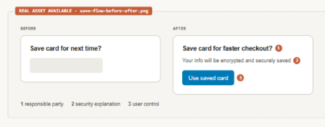
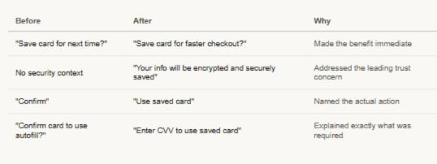
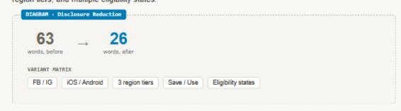

I design content
Turning a trust finding into clearer, higher-performing Autofill experiences
When the strategy audit identified trust as Autofill’s biggest adoption barrier, I redesigned the consent and disclosure experience — and created a reusable baseline for future experiences.
Featured artifact
Save flow, before and after

Impact snapshot
Autofill content optimization impact snapshot
My involvement
Leading content design across a global, privacy-sensitive product surface
Role
Content Design lead for Autofill, partnering with Product Design, UXR, Product Management, Data Science, Engineering, Legal, and Privacy.
Scope
Save and Use flows across Facebook and Instagram, iOS and Android, and U.S., rest-of-world, and stricter European privacy variants.
Contribution
Redesigned consent language, hierarchy, and security messaging; developed experiment variants; secured cross-functional approval; and codified the approved baseline for future experiments.
The challenge
The disclosure was compliant, but it was not answering the questions trust depended on.
Autofill asked people to trust Meta at one of the most sensitive moments in the experience: during checkout, while deciding whether to save payment information. The language was legally accurate but read like a compliance notice. It did not answer what people actually needed to know: who was saving the information, what would be saved, how it would be protected, what would happen next time, or how to manage it.
The strategy audit had quantified the cost of that uncertainty: 67% of users cited security and privacy concerns as the leading adoption blocker. If trust was the primary blocker, the disclosure experience had to earn trust instead of simply satisfying compliance.
The approach
I rebuilt the experience around the questions people needed answered.
01
I reconstructed the reasoning before rewriting the language.
I consolidated legal, privacy, product, and content rationale that had accumulated across earlier reviews, then reorganized the information around the user’s decision rather than the compliance structure.
Who is saving this?What is saved?Save decisionWhy save it?How is it protected?How can I change or remove it?
A trust-question framework made the missing information visible before any new language was proposed.
02
I redesigned the Save and Use moments.
I tested value-centered, security-forward, and control-forward directions. The changes made the benefit immediate, addressed the leading trust concern, named the actual action, and explained exactly what was required.

03
I turned approved decisions into a scalable baseline.
I codified the approved language, rationale, and variants across Facebook and Instagram, iOS and Android, three privacy-region tiers, Save and Use moments, and multiple eligibility states.

Impact
The experience became clearer, shorter, and more effective without weakening compliance.
The optimized Save experience reduced the primary consent disclosure by 58%, cut the full disclosure by 46%, and increased purchase completion by 1.6% on iOS without harming Autofill adoption.
On Instagram Android, Save Accepts rose 1.1% even though checkout completions stayed flat — evidence that the redesigned Save experience itself, rather than increased checkout traffic, persuaded more people to opt in.
The approved framework also changed how the organization worked. Future experiments could move faster because Legal, Privacy, Design, Product, and Content had a shared reference for what good looked like and why.
Reflection
Content can support trust, but it cannot manufacture trust for a product that does not earn it.
My job was to ensure the language, hierarchy, and interactions did their part.
“I design trust by answering the right questions clearly — not by adding more disclosure.”